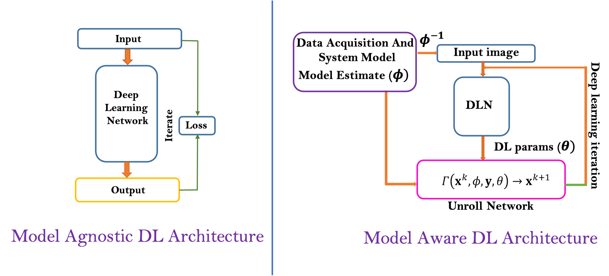
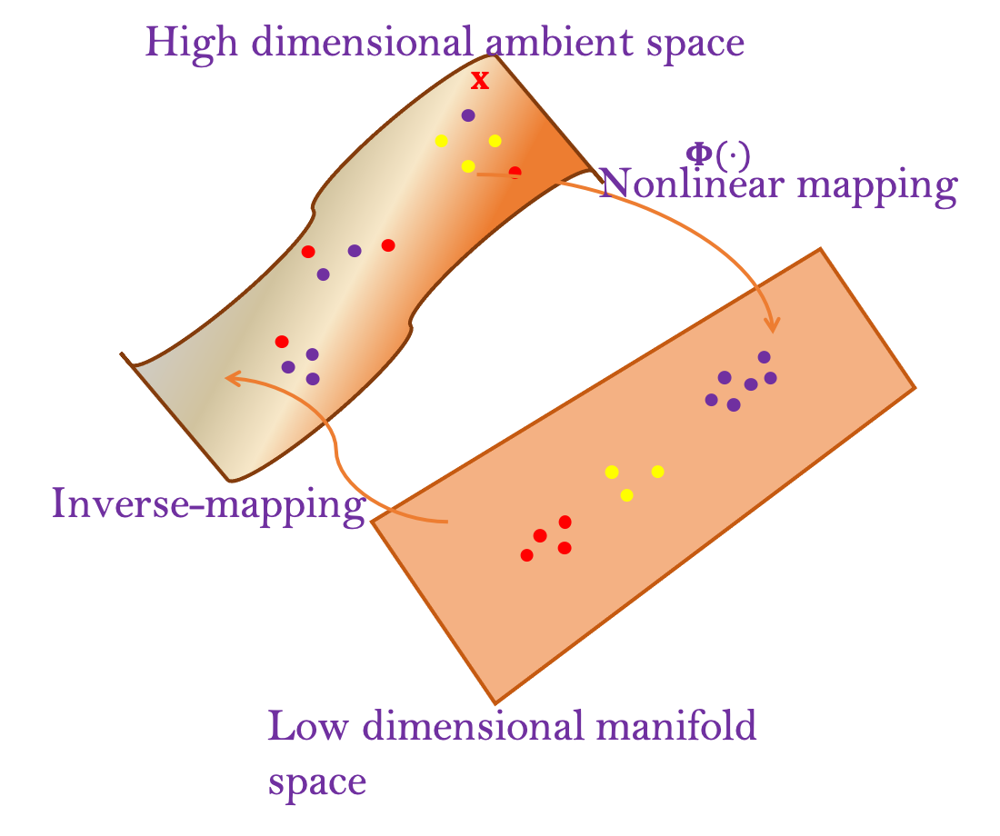
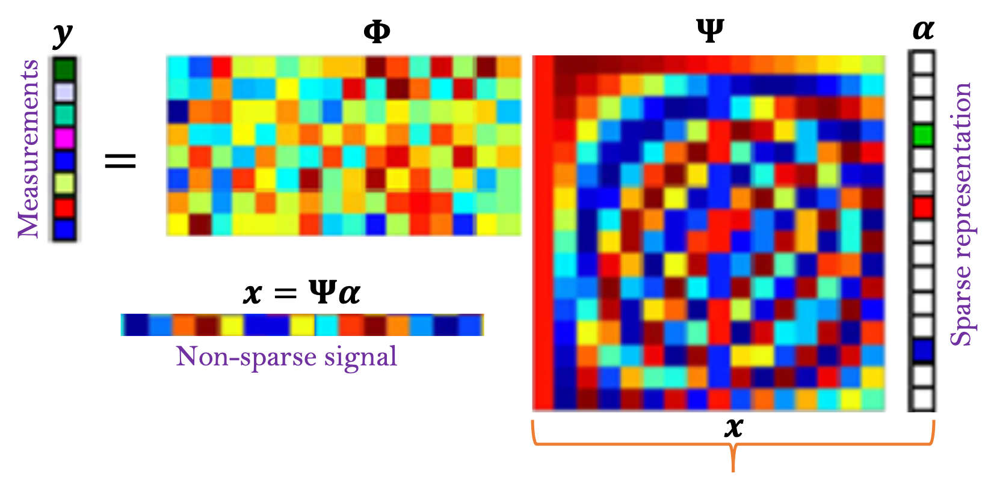
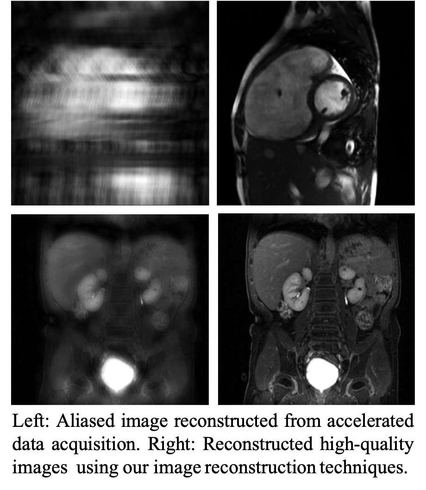
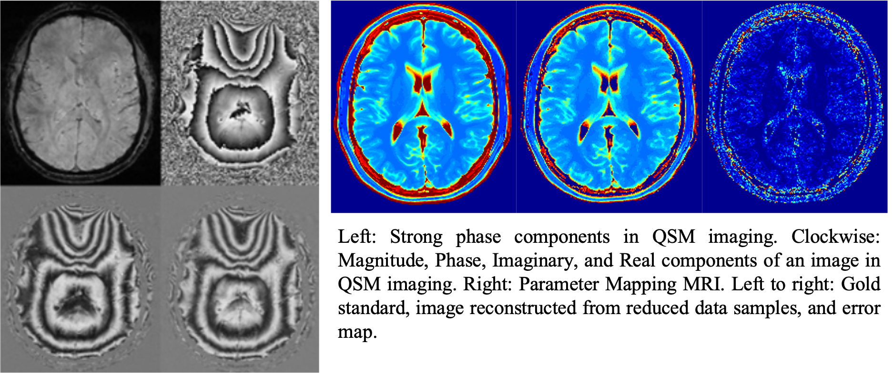
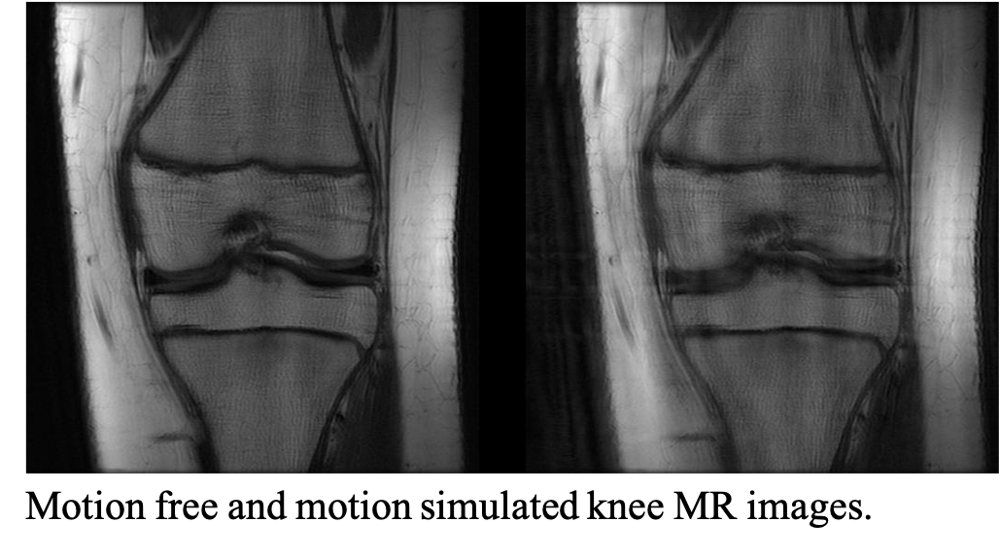
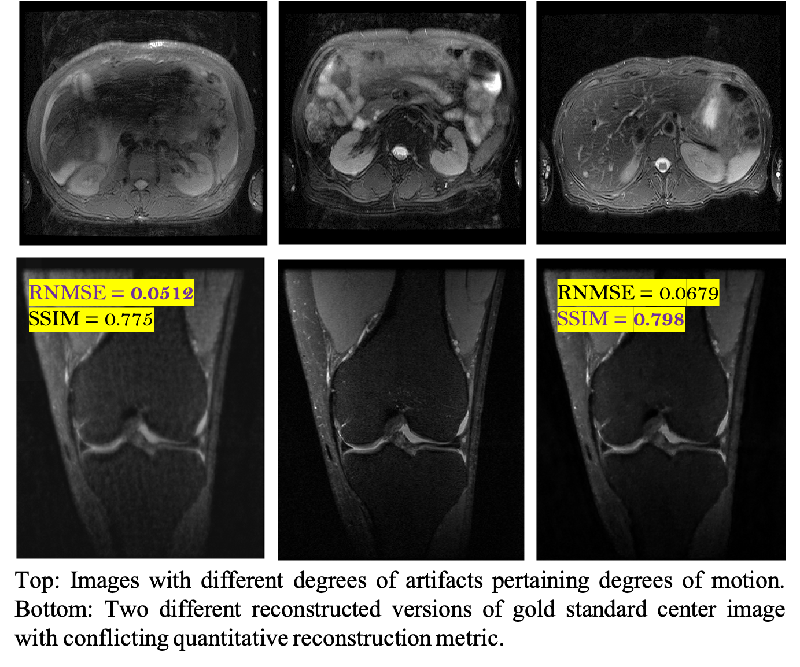

|
Technology
My research focusses on general areas of Signal Processing, Machine Learning and Computational Imaging
with applications to Biomedical Imaging, Healthcare and Medicine.
Model-aware Efficient Deep Learning
|
 |
Data-centric deep learning techniques have shown tremendous potential across several research fields and applications such as computer vision, medical imaging, knowledge discovery, etc. However, many DL
techniques are system model agnostic that leads to inefficient architectures, lack of interpretability and lack of robustness. In our research we focus on:
Integrating model and system information in data-centric deep learning models to reduce excessive data and supervision demands.
Creating more interpretable and robust DL architectures.
Developing new visualization techniques and robust performance metrics for DL models.
|
Dimensionality Reduction and Preimaging
|
 |
Signals and data in natural state are often high dimensional which makes computation and analysis in ambient space complex and expensive.
We focus on developing efficient low-dimensional signal and data representation techniques while preserving properties of signal and data.
We focus on answering following questions:
How do we analyze data in low-dimensional representation for several computational tasks such as clustering, classification, denoising, source separation?
|
Sparse Representation and Compressed Sensing
|
 |
Compressed Sensing (CS) is an efficient technique to solve underdetermined systems of equations. CS has several applications in solving inverse
inverse problems such as signal and image reconstruction, accelerated data acquisition and imaging etc. The main tenet of CS lies on finding Sparse representation
of signal of interest and then use such sparse representation for several signal processing problems such as signal separation, denoising, and signal reconstruction.
We focus on developing:
Efficient sparse representation for naturally non-sparse signals and images.
Model based and data-centric sparse representation techniques.
Novel compressed sensing reconstruction algorithms.
|
Some Applications
My research application focusses on computational imaging applications particularly in medical imaging and photonics and radar imaging.
Some examples from applications to Magnetic Resonance Imaging are:
Accelerated Magnetic Resoanance Imaging
|
 |
Data and signal acquisition in Magnetic Resonance Imaging (MRI) is an inherently slow process because of several physical constraints. This not only makes MRI
slow but also compromise on image resolution. We develop several image reconstruction algorithms from undersampled signals accelerating the signal acquisition process and eventually making MRI faster. Image reconstruction from accelerated
signal acquisition in one hand makes MRI faster whereas in other hand enables several MR imaging protocols that demand for high spatio-temporal resolution and motion robustness.
|
Quantitative Medical Imaging
|
 |
Medical imaging protocols are often times qualitative, meaning: they primarily gives us morphological and physical information of anatomy and tissues. In MRI such information
is obtained by discriminating contrast between different tissues. While qualitative MR imaging has several diagnostic utilities its applications in quantitative imaging is still
limited and challenged by demand for high resolution, specificity and sensitivity, and more complex imaging procedure and data. For example, in flow imaging and quantitative susceptibility mapping
image data are often complex values having strong magnitude and phase components where as parameter mapping imaging, diffusion imaging demand for very high specificity and noise robustness making conventional image reconstruction and analysis techniques not applicable
directly. We focus on developing dedicated image reconstruction and analysis techniques for quantitative medical imaging.
|
Motion and Noise Modeling and Correction in Medical Imaging
|
 |
Magnetic resonance imaging suffers from several artifacts from motion and noise. Such artifacts might lead to non-diagnostic quality images as well as creates risks of
mis-diagnosis. To correct such artifacts resulting from motion and noise it is important to understand and characterize motion and noise. We focus
on characterizing and understanding motion and noise artifacts in MRI, generate artificially simulated artifacts in images for data-intensive deep larning models
and develop motion and noise correction techniques.
|
Image Quality Metric
|
 |
Image quality and diagnostic value of medical images are very perceptual and even subjective. Conventional image quality metrics have two main limitations: i) they often need
gold standard reference images and ii) those metrics might not be very consistent. For example on the images shown here, two different image metrics RNMSE and SSIM have different picks over
two versions of reconstructed knee images from 3 fold accelerated magnetic resonance imaging. We focus on developing reference free, perceptual image quality metrics. Such metrics will have applications
in several tasks such as building automated pipeline for determining diagnostic value of medical images, determining a better image reconstruction techniques, or assessment of image reconstruction techniques when
gold standard reference images are not available.
|
|